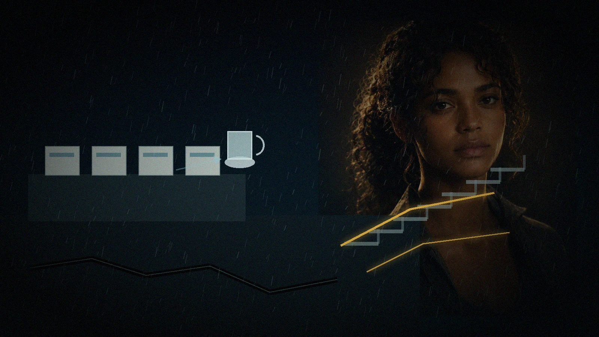

The Glass Walks
Kavera Ridge Community Clinic · 06:12 · nine days after CIVIC-9
The first sign that the hill was moving was that the water in Kelechi’s cup walked uphill.
He had set it on the clinic counter beside three cartons of insulin, a roll of cold-chain labels and the breakfast he had been trying to make Nara eat since Boroko. The cup trembled once. Then it slid six centimetres toward the wall.
Kelechi caught it before it fell.
“Your powers are getting petty,” he said.
Nara did not answer.
The clinic floor had a hairline crack beneath the counter. A bead of water climbed out of it. Not leaked. Climbed—pushed by pressure below.
Outside, rain pressed the hillside settlement into blue-grey layers: corrugated roofs, garden tarps, water tanks, footpaths cut into clay. Kavera Ridge had grown by addition rather than design. One room, then another. One concrete step where a dirt step had failed. One family making space for the next.
The crack moved.
A sound passed under the building like a heavy drawer opening.
Nara put both hands flat on the counter.
“Get Sefa.”
Kelechi had learned the difference between her quiet voice and her ordinary one. He was already moving when the front retaining wall bowed inward.
The waiting room tilted.
A metal chair slid across the tiles. An oxygen cylinder rolled off its stand, regulator first, toward an old man’s ankle. Nara caught the collar with one foot and lowered it before the valve struck concrete.
That was the first thing she saved.
Not the clinic. Not the hill.
One valve that could have become a missile.
Nurse Sefa came through the treatment-room door with a child on her hip and disbelief already turning into procedure.
“What moved?”
“Everything,” Kelechi said.
The rear stair gave a metallic cry.
Three patients were on it: a pregnant woman, a boy carrying a box of dressings and Miri Soro, the clinic committee chair, who had come to complain about a delivery and had stayed to help unload it.
The upper landing pulled away from the wall.
Gold opened beneath Nara’s skin.
She did not reach for the whole building. The temptation arrived anyway—a bright diagram of roof, walls, foundations, people, every load asking to become hers.
She chose the landing.
Thin lines crossed the stair frame, found two concrete columns and rejected the cracked retaining wall. Metal stopped dropping. The pregnant woman froze halfway down.
“Do not look at me,” Nara said. “Look at the next step.”
Miri put one hand beneath the woman’s elbow.
“You heard her. One step.”
The boy went first. Then the woman. Miri came last, carrying the dressings against her chest.
The instant her foot touched the path, Nara released the landing.
It fell half a metre and folded against the wall.
The gold vanished.
Sefa stared at the broken stair, then at Nara.
“How long could you have held it?”
“Eighteen seconds.”
“You counted?”
“My body did.”
A second crack opened through the pharmacy floor.
Nara pointed to the laundry door at the uphill side.
“Which path does not cross the retaining wall?”
Sefa answered immediately. “Through the wash court, behind the church.”
“Then we move people, insulin, antibiotics and oxygen. In that order unless a patient changes it.”
Kelechi lifted the cold box.
“Breakfast?”
“Fifth priority.”
“Abuse of authority.”
“No authority. Only triage.”
They left the clinic through the wash court as the front windows cracked in a single horizontal line.
At the path, Miri turned back toward the building.
Nara caught her arm only long enough to stop the first step. Then she let go.
“What is still inside?”
“Registers. Land copies. My father’s radio.”
“People?”
“No.”
“Then not yet.”
Miri looked at the gold fading from Nara’s wrist.
“You held it.”
“One stair,” Nara said. “For eighteen seconds.”
Above them, a water tank leaned and did not return upright.